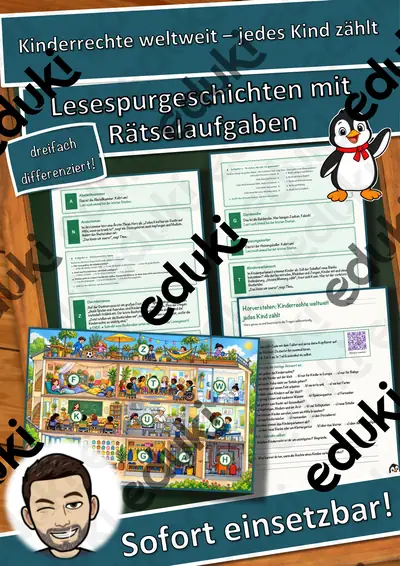

Kinderrechte und Menschenrechte: Arbeitsblätter für Klasse 1–6 (Sachunterricht)
Kinderrechte stehen in der UN-Kinderrechtskonvention und werden in Sachunterricht, Ethik und Politik behandelt. Kinder erfahren, dass sie Rechte auf Schutz, Förderung und Beteiligung haben.
Typische Bausteine der Einheit sind Recht auf Bildung, Recht auf Spiel und Schutz vor Gewalt; darauf aufbauend kommen Mitbestimmung, Menschenrechte und UN-Konvention zur Sprache.
Im Fach Sachunterricht gehört das Thema nach den Lehrplänen der Länder zum festen Programm, überwiegend in den Klassen 1 bis 6. Die Kinder nennen wichtige Kinderrechte und übertragen sie auf Alltagssituationen.
Für den Einstieg in Kinderrechte und Menschenrechte bieten sich Aufgaben zu Recht auf Bildung an, zum Üben solche zu Recht auf Spiel und Schutz vor Gewalt, zur Wiederholung vor einer Lernkontrolle ein Blick auf UN-Konvention. Die Lösungen liegen bei, sodass im Unterricht niemand nachschlagen muss. Zur Differenzierung eignen sich die Lesespurgeschichten mit ihren drei Niveaustufen.
Die Auswahl zum Thema umfasst derzeit 8 Titel, zum Beispiel Mein Recht im Alltag Materialpaket: 3 Einheiten, Mein Recht im Alltag Mitreden statt zuhören und Mein Recht im Alltag Sicher groß werden: Schutz. Dazu zählen 1 Lesespurgeschichte und 2 Lückentexte mit Hörverstehen für Klasse 3–7. Ein Klassenparlament, in dem echte Entscheidungen fallen, macht Mitbestimmung unmittelbar erfahrbar.
Das gehört zum Thema
Passende Arbeitsblätter und Materialpakete

Mein Recht im Alltag Materialpaket: 3 Einheiten – Alltag den Kinderrechten zuordnen und selbst reflektieren (Grundschule

Kinderrechte weltweit – jedes Kind zählt – Lesespurgeschichte mit Rätselaufgaben (Klasse 3)

Kinderrechte Lückentext mit Wortspeicher Hörverstehen und Suchsel

Menschenrechte Lückentext mit Wortspeicher Hörverstehen und Suchsel

Mein Recht im Alltag Mitreden statt zuhören: Mein Recht auf Beteiligung – Alltag den Kinderrechten zuordnen und selbst r

Mein Recht im Alltag Sicher groß werden: Schutz vor Gewalt und meine Privatsphäre – Alltag den Kinderrechten zuordnen un

Mein Recht im Alltag Spielen und Toben im Herbst: Mein Recht auf Freizeit – Alltag den Kinderrechten zuordnen und selbst

Was sind Kinderrechte - Homeschooling
Häufige Fragen
Für welche Klassenstufe passen die Arbeitsblätter zu Kinderrechte und Menschenrechte?
Der Schwerpunkt liegt auf Klasse 3; insgesamt deckt die Auswahl (8 Titel) Klasse 3–7 ab. In der Beschreibung jedes Materials steht die empfohlene Stufe.
Welche Inhalte decken die Materialien zu Kinderrechte und Menschenrechte ab?
Inhaltlich reicht die Auswahl von Recht auf Bildung über Recht auf Spiel und Schutz vor Gewalt bis zu Menschenrechte; Details stehen bei den einzelnen Materialien.
Wie setze ich Kinderrechte und Menschenrechte im Unterricht ein?
Beginnen Sie mit einem Einstieg zu Recht auf Bildung und ergänzen Sie nach Bedarf. Ein Klassenparlament, in dem echte Entscheidungen fallen, macht Mitbestimmung unmittelbar erfahrbar.
Mehr Material nach Fach und Klasse
- Alle Materialien Sachunterricht
- Arbeitsblätter Sachunterricht Klasse 1
- Arbeitsblätter Sachunterricht Klasse 2
- Arbeitsblätter Sachunterricht Klasse 3
- Arbeitsblätter Sachunterricht Klasse 4
- Arbeitsblätter Sachunterricht Klasse 5
- Arbeitsblätter Sachunterricht Klasse 6
- Unterrichtsmaterial Klasse 1
- Unterrichtsmaterial Klasse 2
- Unterrichtsmaterial Klasse 3
- Unterrichtsmaterial Klasse 4
- Unterrichtsmaterial Klasse 5
- Unterrichtsmaterial Klasse 6
Verwandte Lehrplanthemen
- Jahreszeiten (Sachunterricht, Klasse 1–4)
- Bauernhof und Nutztiere (Sachunterricht, Klasse 1–4)
- Berufe und Berufswahl (Sachunterricht, Klasse 1–10)
- Dinosaurier und Urzeit (Sachunterricht, Klasse 1–5)
- Geld und Konsum (Sachunterricht, Klasse 2–10)